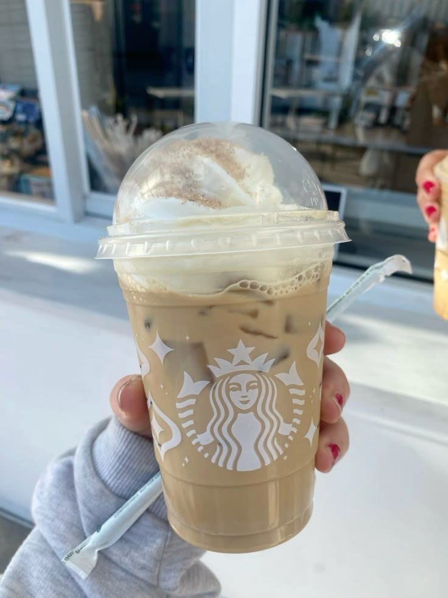

| Bebida | Imagen | Receta |
|---|---|---|
| Frappuccino de Vainilla |  | 1 taza de hielo, 1/2 taza de leche, 1/4 taza de sirope de vainilla, 1/2 taza de café helado. Mezclar todo en licuadora. |
| Té Frío de Fresas | |
1 taza de fresas, 1/2 taza de agua, 1 cucharadita de azúcar, 1 taza de té verde. Licuar y enfriar. |
| Strawberry Matcha | |
Fresas, matcha, leche, azúcar (opcional), hielo. Mezcla todo y licúa. Sirve frío. |
| Purple Spring | |
Lavanda, jugo de uva, limón, miel y agua. Mezcla y sirve con hielo. |